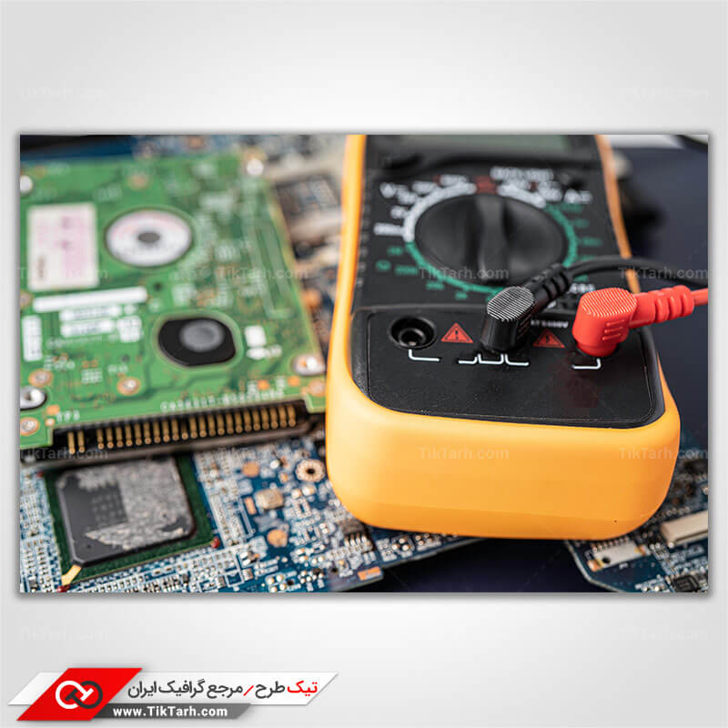

اینجا میتوانید با رشته مهندسی کامپیوتر، آینده شغلی و مهارتهای مورد نیاز آشنا شوید.
شته مهندسی کامپیوتر یکی از پرتقاضاترین و منعطفترین رشتهها در بازار کار است. با گسترش دنیای دیجیتال، تقریباً هیچ صنعتی وجود ندارد که به مهندس کامپیوتر نیاز نداشته باشد. چه در داخل کشور و چه در سطح جهانی، فرصتهای شغلی فراوانی در انتظار فارغالتحصیلان این رشته است
با افزایش تعداد استارتاپها، شرکتهای نرمافزاری، پروژههای دولتی و دیجیتالی شدن کسبوکارها، بازار کار رشته کامپیوتر در ایران بسیار داغ است
توسعهدهنده وب (Frontend/Backend)
برنامهنویس موبایل (Android/iOS)
مهندس نرمافزار در شرکتهای نرمافزاری
طراح و مدیر پایگاه داده
متخصص امنیت اطلاعات و شبکه
تحلیلگر داده و هوش تجاری (BI)
کار در شرکتهای دولتی، نظامی یا بانکی در حوزه آیتی
آموزش و تدریس در آموزشگاههای فنی یا دانشگاهها
امکان دورکاری و فریلنسینگ
درآمد بالا نسبت به بسیاری از رشتههای مهندسی دیگر
امکان کار همزمان با تحصیل
رشد سریع در شغل و تبدیل شدن به مدیر فنی یا CTO
در سطح جهانی، مهندسان کامپیوتر از پرمتقاضیترین نیروهای کار هستند. بسیاری از شرکتهای بزرگ تکنولوژی مانند Google، Amazon، Microsoft، Meta، Apple، IBM و حتی استارتاپها و شرکتهای اروپایی و آسیایی بهدنبال جذب افراد متخصص هستند
Software Developer / Software Engineer
Data Scientist / Data Analyst
Cloud Engineer (AWS, Azure, GCP)
Cybersecurity Analyst
DevOps Engineer
Machine Learning Engineer
Blockchain Developer
QA Tester

حقوق بالا و استانداردهای شغلی پیشرفته امکان مهاجرت کاری به کشورهای پیشرفته (کانادا، آلمان، استرالیا، هلند، ...) نیاز به رزومه قوی، گواهینامههای بینالمللی و زبان انگلیسی خوب ۳. کار بهصورت آزاد (Freelancing) و دورکاری یکی از بزرگترین مزایای این رشته، امکان کسب درآمد از خانه است. افراد زیادی از طریق فریلنسینگ در سایتهایی مانند:
Upwork.com Freelancer.com Toptal.comسایتهای فریلنسری ایرانی مثل پونیشا، پارسکدرز، کارلنسر درآمد دلاری دارند. کافی است تخصص، نمونهکار و توانایی ارتباط با مشتری را داشته باشید
تمرکز این گرایش روی ساختار فیزیکی و معماری داخلی سیستمهای کامپیوتری است
میزان درآمد افراد فعال در رشته مهندسی کامپیوتر به عوامل مختلفی مثل تخصص، تجربه، محل کار، شهر یا کشور محل فعالیت و نوع شغل بستگی دارد. در ادامه برخی از موقعیتهای شغلی رایج و حدود درآمد آنها در ایران و خارج از کشور را به صورت تقریبی بررسی میکنیم
رنامهنویس وب (Web Developer) در ایران، بسته به سطح مهارت و شرکت محل کار، درآمد برنامهنویسان وب میتواند بین ۲۰ تا ۷۰ میلیون تومان در ماه باشد. در خارج از کشور، بهطور میانگین درآمد سالانه این شغل بین ۶۰٬۰۰۰ تا ۱۲۰٬۰۰۰ دلار است
مهندس یادگیری ماشین (Machine Learning Engineer) این حوزه یکی از تخصصیترین و پردرآمدترین زیرشاخههای کامپیوتر است. در ایران، درآمد این شغل معمولاً بین ۴۰ تا ۱۲۰ میلیون تومان در ماه است. در کشورهای توسعهیافته، میانگین درآمد سالانه آن بین ۹۰٬۰۰۰ تا ۱۵۰٬۰۰۰ دلار میباشد
متخصص امنیت اطلاعات (Cybersecurity Specialist) با رشد حملات سایبری، تقاضا برای این موقعیت شغلی افزایش یافته است. در ایران، متخصصین امنیت میتوانند بین ۳۰ تا ۱۰۰ میلیون تومان در ماه درآمد داشته باشند. در خارج از کشور، درآمد سالانه این افراد بین ۸۰٬۰۰۰ تا ۱۴۰٬۰۰۰ دلار است
فریلنسر حرفهای (Freelancer) درآمد فریلنسرها بسیار متغیر است و به تعداد پروژهها و مهارت فرد بستگی دارد. در ایران، یک فریلنسر حرفهای میتواند تا ۲۰۰ میلیون تومان در ماه هم درآمد داشته باشد. در بازار جهانی، درآمد دلاری فریلنسرها هیچ سقف مشخصی ندارد و بسته به پروژهها میتواند بسیار بالا باشد
رشته مهندسی کامپیوتر از معدود رشتههایی است که حتی با یک لپتاپ و اینترنت میتوان از آن درآمد کسب کرد. آینده شغلی در این حوزه درخشان است، چه در ایران بمانی و چه برای مهاجرت برنامهریزی کنی. تنها شرط آن این است که مهارت داشته باشی، نه صرفاً مدرک